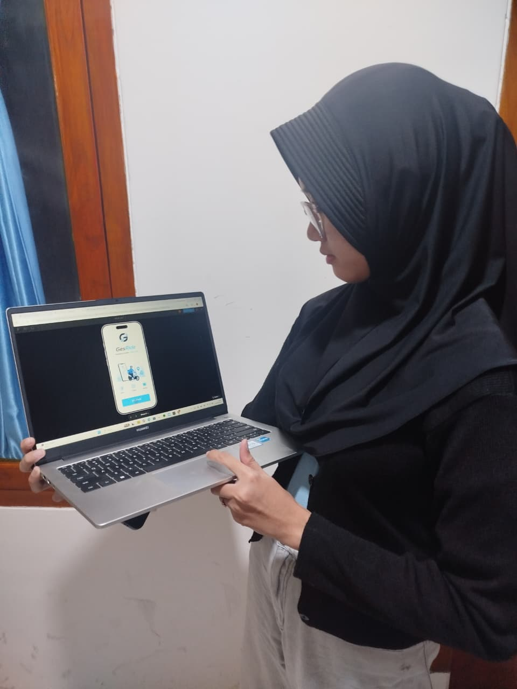
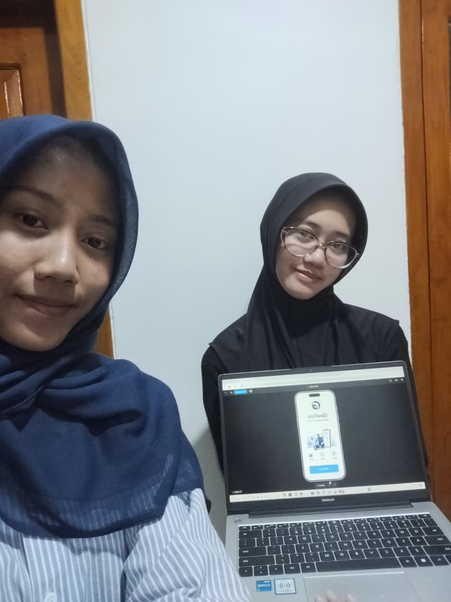
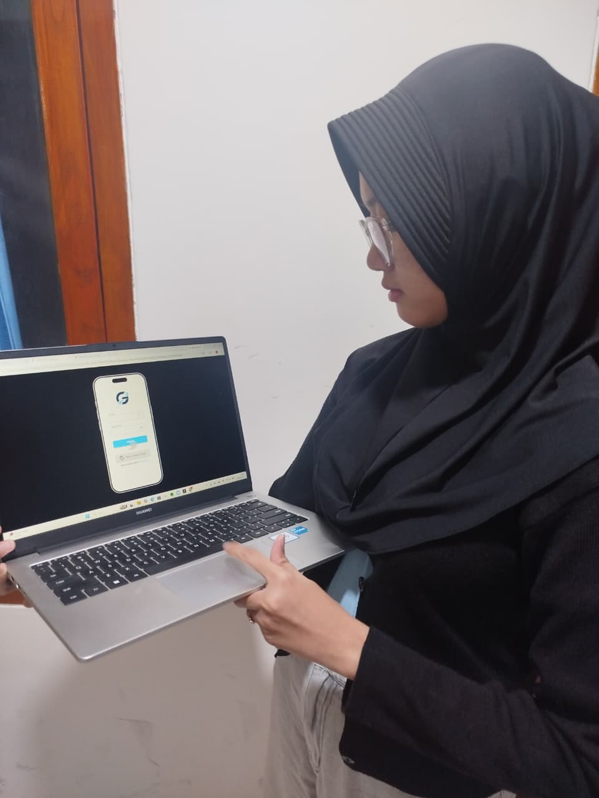
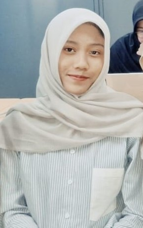

Aplikasi transportasi modern — pesan perjalanan & makanan dalam satu platform yang cepat, intuitif, dan menyenangkan.
Prototype interaktif aplikasi GesRide — rasakan langsung alur pemesanan ride & food delivery.
Memahami kebutuhan, kebiasaan, dan pain point pengguna layanan transportasi dan food delivery.
Insight wawancara
Wawancara mendalam dengan pengguna aktif ojek online dan food delivery untuk menggali pain point nyata.
Data kuantitatif dari berbagai segmen terkait kebiasaan penggunaan aplikasi transportasi sehari-hari.
Mengamati perilaku nyata pengguna saat memesan ojek & makanan untuk menemukan hambatan tersembunyi.
Merumuskan masalah utama dan peluang solusi berdasarkan temuan dari tahap empathize.
Pengguna membutuhkan aplikasi transportasi dan food delivery yang mudah digunakan, memiliki alur pemesanan yang cepat dan jelas, tampilan intuitif, serta mampu mengintegrasikan layanan perjalanan dan makanan dalam satu platform yang efisien dan terpercaya langsung dari smartphone.
How Might We
Bagaimana meningkatkan keamanan perjalanan dan mencegah perilaku berkendara yang tidak aman?
Fitur darurat satu tekan, live trip, rekam otomatis, dan notifikasi keselamatan.
Bagaimana mempercepat ketersediaan driver dan mengurangi pembatalan pesanan?.
Fitur penjadwalan, mode prioritas, batas pembatalan driver, dan driver cadangan otomatis.
Bagaimana meningkatkan transparansi tarif dan akurasi titik jemput?.
Rincian tarif (Price Breakdown) serta Drag & Drop Pin dengan foto lokasi.
HMW
Prioritas Masalah
Project ini dikerjakan menggunakan Figma dalam timeline 3 minggu — mencakup riset pengguna, empathize, define, ideate, user flow, wireframe, UI kit, high fidelity, prototype interaktif, dan portofolio UAS.
Eksplorasi ide, wireframe, user flow, dan design system aplikasi GesRide.
Crazy 8 & Brainstorming
Low Fidelity & User Flow
Login/Registrasi
Pemesanan Layanan Kendaraan
Pemesanan Layanan Makanan
High Fidelity
Login & Registrasi
Pemesanan Layanan Kendaraan
Pemesanan Layanan Makanan
UI Kit & Design System
Validasi prototype GesRide — memastikan alur ride dan food delivery terasa cepat, jelas, dan menyenangkan.
"Anda ingin memesan ojek ke destinasi tertentu, lalu melanjutkan dengan memesan makanan melalui fitur food delivery pada prototype GesRide."
| Task | Status | Catatan |
|---|---|---|
| Membuka aplikasi & memahami beranda | ✓ Berhasil | Tampilan home jelas dan informatif |
| Memilih layanan perjalanan (Ride) | ✓ Berhasil | Ikon layanan mudah dikenali |
| Menentukan titik penjemputan & tujuan | ✓ Berhasil | Input lokasi responsif |
| Memilih layanan food delivery | ✓ Berhasil | Navigasi antar layanan lancar |
| Menyelesaikan proses pemesanan | ✓ Berhasil | Alur checkout perlu disederhanakan |
Dokumentasi Testing

Foto Dokumentasi 1

Foto Dokumentasi 2

Foto Dokumentasi 3
Qualitative Testing — task-based testing + observasi singkat menggunakan prototype Figma GesRide bersama pengguna nyata.
Tampilan bersih dan navigasi antara ride & food mudah diikuti. Checkout disarankan lebih ringkas agar alur tidak terhenti di tengah.
Before
Alur pemesanan terasa cukup panjang. Estimasi tarif tidak langsung terlihat di layar pertama.
After
Estimasi tarif & tombol konfirmasi ditonjolkan di area utama — proses pesan jadi lebih cepat dan ringkas.
Proses desain GesRide dari riset awal hingga finalisasi portofolio UAS.
Riset pengguna, konsep ride + food, user flow, dan menyusun struktur halaman utama.
Wireframe lo-fi, UI kit, color system, typography, komponen kartu, dan navigasi.
High fidelity, prototype interaktif, user testing, dan finalisasi portofolio UAS.

Mahasiswi yang passionate di bidang desain antarmuka dan pengalaman pengguna. GesRide adalah project UAS yang menggabungkan design thinking, riset pengguna, dan prototype interaktif untuk menciptakan aplikasi transportasi yang modern dan intuitif.